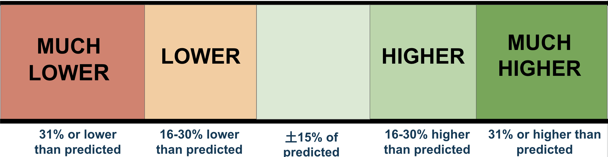
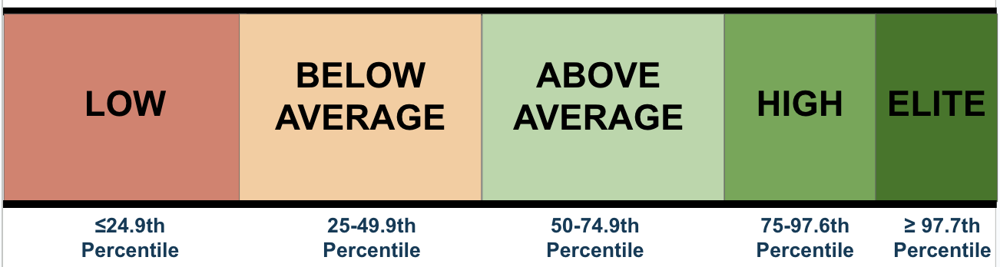

| Variable | Value | Note |
|---|---|---|
| Body Mass Index (BMI) | ||
| Fat Mass Index (FMI) | ||
| Fat‑Free Mass Index (FFMI) | ||
| Grip Strength | ||
| Heart Rate Recovery (1 min) | ||
| Resting Heart Rate | ||
| Resting Metabolic Rate | ||
| Systolic BP | ||
| Diastolic BP | ||
| VO₂ Max (Est.) | ||
| Functional Strength Score |

kcal/day| Metric | Value |
|---|---|
| Predicted RMR | kcal/day |
| Measured RMR | kcal/day |
| % Calories from Fat | % |
| % Calories from Carbohydrate | % |
| Conservative Weight Loss Target | kcal/day |
| Aggressive Weight Loss Target | kcal/day |
| Conservative Weight Gain Target | kcal/day |
| Aggressive Weight Gain Target | kcal/day |

| Estimated VO₂ Max (ml/kg/min) | |
| Estimated VO₂ Max (METS) | |
| Percentile | % |
| Right Hand Grip Strength | kg |
| Left Hand Grip Strength | kg |
| Average Grip Strength | kg |
| Predicted Rep Max | Bench Press (lbs) | Pulldown (lbs) | Deadlift (lbs) |
|---|---|---|---|
| 1 | |||
| 2 | |||
| 3 | |||
| 4 | |||
| 5 | |||
| 6 | |||
| 7 | |||
| 8 | |||
| 9 | |||
| 10 | |||
| 11 | |||
| 12 | |||
| 13 | |||
| 14 | |||
| 15 |
| Target | Value |
|---|---|
| Energy Target | kcal/day |
| Protein Target | g/day |
| Carbohydrate Target | g/day |
| Fat Target | g/day |
| Fiber Target | g/day |
| Fluid Target | ml/day |